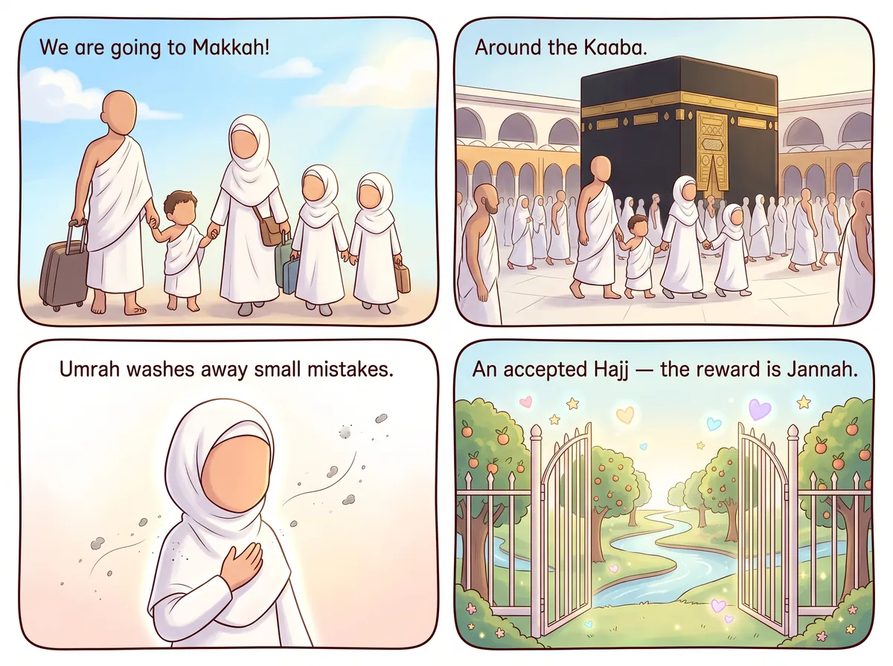
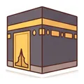
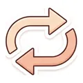
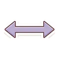
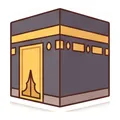
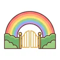

‹ All hadith
Umrah and Hajj

عَنْ أَبِي هُرَيْرَةَ، أَنَّ رَسُولَ اللَّهِ ﷺ قَالَ: الْعُمْرَةُ إِلَى الْعُمْرَةِ كَفَّارَةٌ لِمَا بَيْنَهُمَا وَالْحَجُّ الْمَبْرُورُ لَيْسَ لَهُ جَزَاءٌ إِلَّا الْجَنَّةُ
Say it with me: Al-'umratu ila l-'umrati kaffāratun limā baynahumā, wal-ḥajju l-mabrūru laysa lahu jazā'un illa l-jannah.
“An Umrah to another Umrah is an expiation for what comes between them, and an accepted Hajj (Hajj Mabrur) has no reward except Paradise.”
Narrated by Abu Hurairah (RA) · Al-Bukhari & Muslim
What does it mean for me?
Umrah is a special visit to the Kaaba in Makkah. Going for Umrah wipes away small mistakes. And a Hajj that Allah accepts has one reward only — Jannah! Ask Allah to take you there one day.🔤 10 words
tap a card to hear it
🔊

الْعُمْرَةُ
one Umrah
🔊

إِلَى الْعُمْرَةِ
to the next Umrah
🔊
كَفَّارَةٌ
wipes away
🔊

لِمَا بَيْنَهُمَا
what is between them
🔊

وَالْحَجُّ
and the Hajj
🔊
الْمَبْرُورُ
that is accepted
🔊
لَيْسَ لَهُ
has no
🔊
جَزَاءٌ
reward
🔊
إِلَّا
except
🔊

الْجَنَّةُ
Paradise
⭐ Let's try it!
Make a dua: "O Allah, let me visit Your House in Makkah one day."